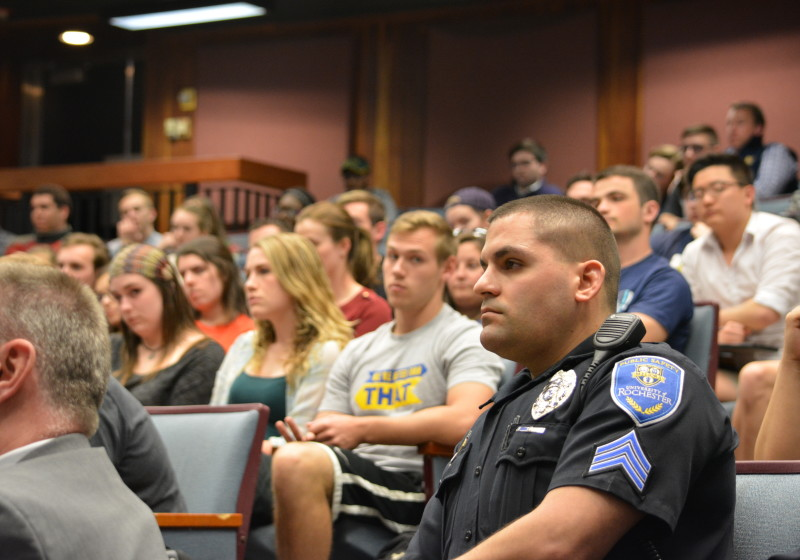
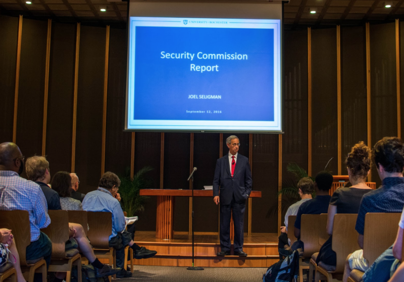

A DPS Timeline
-
Sworn peace officers added to DPS
12 September, 2013
25 new officers were sworn under state law, giving them authority similar to a cop’s. They were unarmed.
-
Mark Fischer becomes DPS director
20 November, 2013

After serving as deputy director since 2011, Fischer became the director of Public Safety at the end of 2013.
-
Commission evaluates potentially arming officers
21 April, 2016
An administration-led commission got feedback on the prospect of arming DPS officers. Many students voiced opposition.
-
Commission recommends arming Med Center officers
8 September, 2016
The commission recommended the med center get 38 officers broken into three shifts, as well as arming 4 members of command staff. (See the commisions's report here).
-
Seligman holds two public forums on the recommendation
18 September, 2016
At the forum, Seligman said the recommendation was not the beginning of a greater arming plan. (See our livestream here.)
-
Med center arming announced, Public Safety Review Board formed
13 October, 2016
With arming of 38 officers at the med center and four command staff members, administration also created the Public Safety Review Board. (See Seligman’s announcement here.)
-
DPS proposes arming officers on the Eastman and River Campuses
25 October, 2018
The proposal has two suggestions: The first is that armed supervisors get access to campus in non-emergency situations. The second is that two armed vehicle officers be stationed on River Campus, and one armed foot patrol officer be stationed at Eastman. Each position would have five shifts, so that would be arming a total of 15 officers. (See the proposal here.)
-
MSAB criticizes the proposal and demands a public forum
10 November, 2018
MSAB held a public forum on Oct 28, where several students and faculty rejected the proposal. Later, MSAB sent an email to all of its members condemning the proposal, and called for DPS to attend a public forum on the subject.
-
UR announces ad hoc Public Safety Proposal Advisory Committee
11 November, 2018
The committee would be composed of faculty, students, and staff and would give the Review Board feedback on the proposal.
-
MSAB organizes sit-in at Faculty Senate meeting, Feldman agrees to Public Forum
19 November, 2018
On Nov 14, students crashed a Faculty Senate meeting where the proposal was to be discussed. The students demanded a public forum be held. President Richard Feldman was in attendance. After initially resisting, he eventually agreed.
-
MSAB is dissatisfied with forum
3 December, 2018
While administration were happy with the town hall, some students felt the structure to be stifling. Tara Eagan said that she would have preferred a “Q and A” format.
-
Administration and MSAB hold the public forum
9 December, 2018

At the forum, Fischer said that the proposal aims to reduce armed officer response time, that weapons have only been drawn five times since the med center arming in 2016, and DPS has more restrictions on firearm usage than the Rochester Police Department.
-
Ad hoc committee consists of faculty, staff, students, one community
member
21 January, 2019
When the Campus Times reached out to members of the ad hoc Advisory Committee, those who responded didn’t say much about any position on the proposal. Their report (or reports) were due for submission to the Review Board and Feldman by March 27.
-
The Advisory Committee’s deadline to submit its findings
17 March, 2019
Around this time, the Advisory Committee submitted its report(s) to the Review Board and President Feldman. It was not released to the public.
-
The Review Board votes on its recommendation
9 April, 2019
The Public Safety Review Board, having seen the Advisory Committee’s report(s), voted on its recommendation to President Feldman concerning the proposal. The resulting recommendation was not made public.